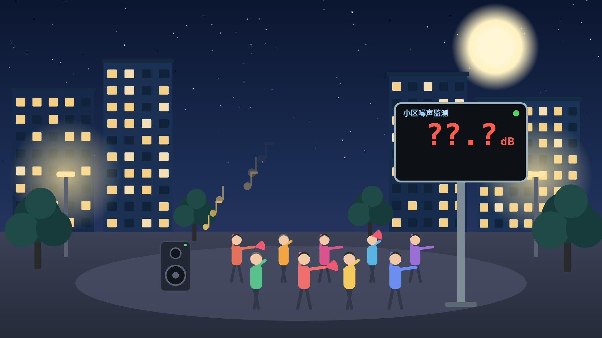
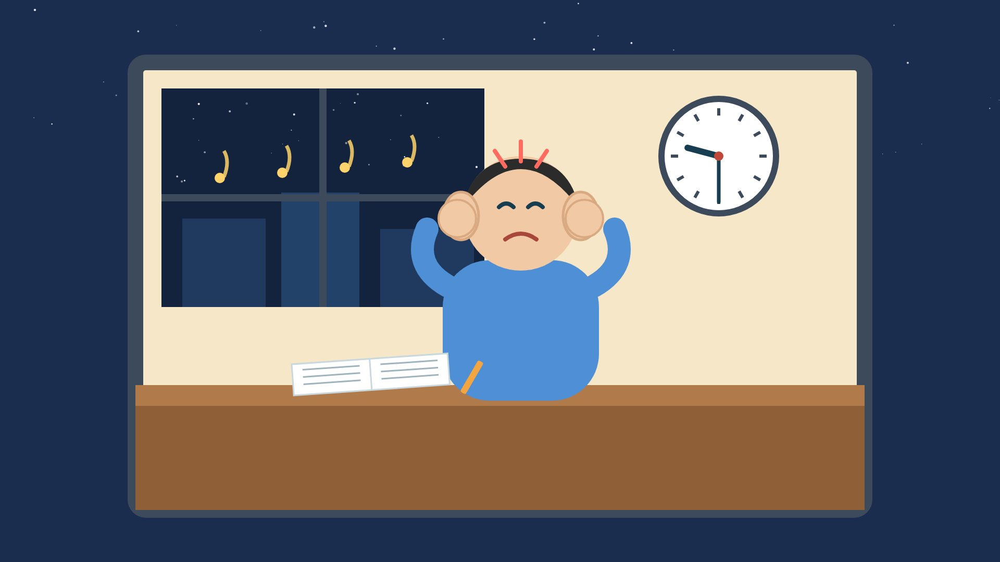
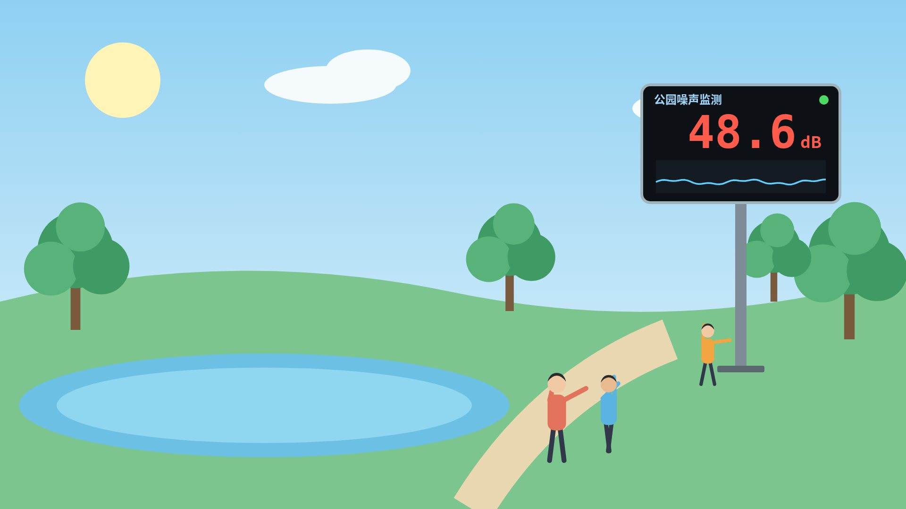
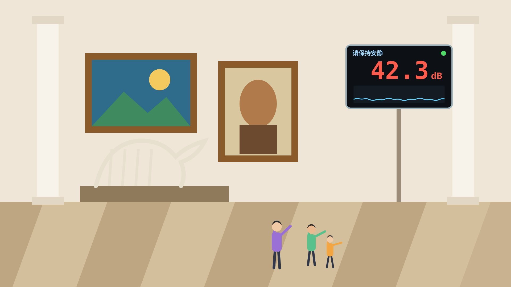
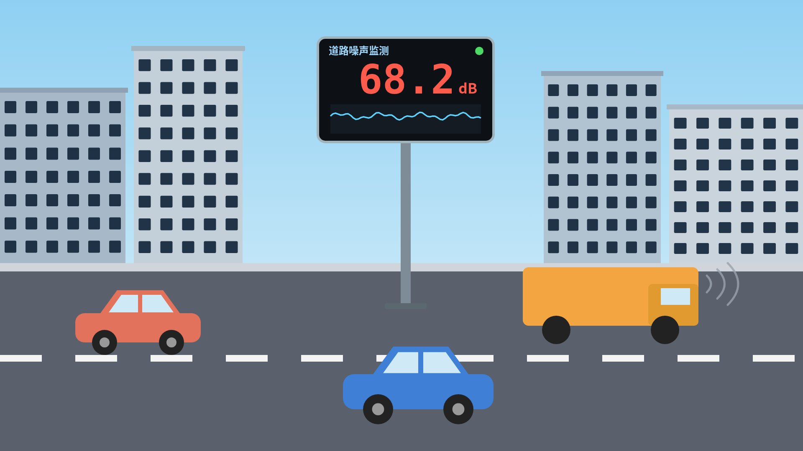

六年级 · 过程与控制 · 第5课
数据一直在变，
系统怎样知道该做什么？
连续变化的数据
上节课的声控灯，是怎样工作的？
输入
🎤
采集声音计算
🧮
判断有没有声音输出
💡
灯亮 / 灯灭在这三个环节之间，一直在“流动”的是什么？
数据声音变成数据 → 数据被计算 → 计算结果变成动作

🌙 晚上 8:30
小区广场上，音乐响起来了……

到底有多吵？只靠耳朵感觉，说得清吗？
看一看：广场旁的噪声显示屏
- 屏幕上的数字，是怎样变化的？
- 那条红色虚线，可能表示什么？
- 屏幕凭什么判断“该提醒了”？
这样的屏幕，你在哪里见过？



这些数字会停下来吗？两个数字之间，还有别的数吗？
我们教室现在有多“响”？ 选做 · 约40秒
--
相对响度（0—100，不是分贝）
没有麦克风也没关系，可以按住“模拟声音”演示。
🤫 安静挑战：全班安静5秒，看曲线能降到哪里；再请一位同学轻轻拍一下手。
猜一猜：声音数据，用哪种图表示更合适？
举手投票！老师点卡片计数（或按 A / B 键）。答案藏在今天的第2站。
今天，带着三个问题出发
- 1数据在控制系统里，是怎样流动的？
- 2声音这样的数据，长什么样？
- 3数据一直在变，系统凭什么判断“该提醒了”？
打开 噪声监测数据站：http://教师电脑IP:8796/